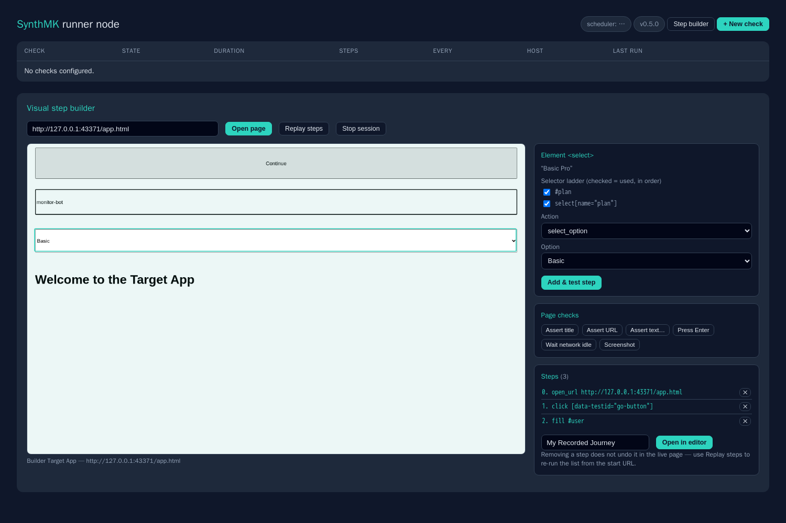

Authoring
Record it, click it together, or write it. Every path produces the same artifact: a short YAML flow you can read, diff and review. A check started by an application owner can be refined by an engineer without translation.
Install the recorder extension (Chrome, Edge or Firefox), open your application, press Start, and do the journey like a user. Every click, keystroke, dropdown selection and Enter press lands in a live step list you can edit on the spot: delete a mis-click, add an assertion, set warn/crit thresholds, export.
{{ secret.password }} with a sensitive flag. The value stays on the page.
Locked-down desktops where extensions need an approval ticket? Every Chrome already ships a recorder. Open DevTools → Recorder, record the journey, export the recording as JSON, and import it on the node dashboard. SynthMK converts the recording's steps and selectors into the same readable YAML flow.
That makes authoring possible from any machine with Chrome. No software request, no developer mode, nothing installed.
# What the importer produces from a DevTools recording name: "Synthetic Portal Login" warn_ms: 4000 crit_ms: 10000 steps: - action: open_url url: "https://portal.example.lan/login" - action: fill selector: - "#username" - "input[name='user']" # fallback array from - "aria/Username" # the recording's candidates value: "{{ secret.portal_user }}" - action: fill selector: "#password" value: "{{ secret.portal_password }}" sensitive: true - action: press key: "Enter" - action: check_visible_text text: "Dashboard"
The node dashboard includes a no-code step builder. Open a live preview of the target page, click the element you care about, and choose what should happen there:
Because the builder selects elements from the live page, it generates selector fallback arrays the same way the importer does. And because it runs on the node, the flow is scheduled the moment you save it.

<select> picked on the page preview, its verified selector ladder, and three already-tested steps.Flows are deliberately small and declarative: a name, thresholds, and an ordered list of steps. They live in a directory you can mount from git, so checks go through the same pull-request review as the application they monitor.
The step vocabulary covers real journeys without turning into a programming language: navigation, clicks, fills, key presses, dropdowns, hovers, scrolls, explicit waits (wait_for_element, wait_for_url, wait_for_network_idle), evidence screenshots, and the full assertion set. Steps marked optional: true absorb cookie-consent banners without failing the journey.
Reusable sub-flows keep journeys DRY: define the login sequence once, include it from every flow that needs it, and a login-page change becomes a one-file fix.
# flows/checkout.yaml: a complete production check name: "Synthetic Shop Checkout" warn_ms: 5000 crit_ms: 12000 screenshot_on_failure: true checkmk_host: shop-frontend # attribute to the app's host steps: - action: include # shared login sub-flow flow: shared/login.yaml - action: click selector: - "[data-test=add-to-cart]" - "text=Add to cart" # fallback selector - action: click selector: "#checkout" - action: wait_for_url contains: "/order/confirm" - action: check_visible_text text: "Order confirmed" - action: check_text_absent text: "error"
Some checks genuinely need code: multi-tab dances, conditional paths, API setup before the browser opens. For those, SynthMK runs full Playwright Python scripts as checks: same scheduler, same service output contract, same screenshots and redaction.
Running operator-supplied code on a monitoring probe is remote code execution by design, so this path is disabled by default. The operator must explicitly enable a trusted scripts directory on the node before any script check executes. Authors cannot turn it on from the dashboard. How the trust gate works →
# flows/scripts/handover.py: runs as a normal check # (flows/handover.yaml: type: script, script: scripts/handover.py) def run(page, api): page.goto("https://portal.example.lan") with api.step("login"): # named, graphed in Checkmk page.fill("#user", api.secret("portal_user")) page.fill("#pw", api.secret("portal_password")) page.click("text=Sign in") with api.step("report"): with page.expect_popup() as tab: page.click("text=Open report") assert "Report" in tab.value.title() assert "Quarterly" in tab.value.title()
| You are… | Best path | Why |
|---|---|---|
| An application owner who wants “is login broken?” | Record, or visual builder | No tooling beyond a browser; the result is already a reviewable file. |
| On a locked-down desktop, no extensions allowed | DevTools Recorder import | Chrome's built-in recorder plus a JSON upload, nothing to install. |
| An SRE managing dozens of checks in git | YAML by hand | Diffable, templatable, sub-flows for shared logins, reviewed like code. |
| Automating something genuinely complex | Playwright script check | Full code power, same monitoring contract, once the operator enables it. |